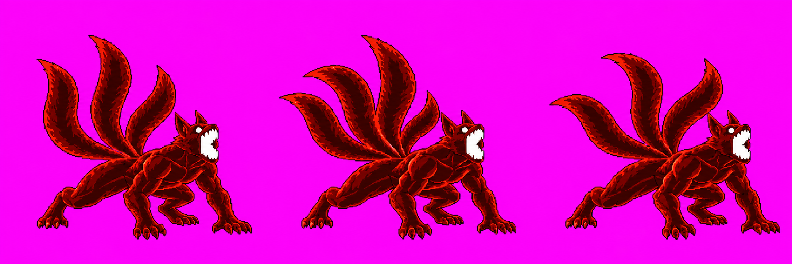

Naruto Skills Revamp · Batch 1
Four-Tails ultimate candidates. Generation and versioned filing are complete for this batch; this page records technical review before any user image approval.
Not ready for user approval. The final Astra audit holds all three character assets. The Four-Tails roar effect is awaiting the new HD-cell packer support from Claude.
B1 · beamCharge v10 HOLD

- All three frames inspected in the 48-color partial atlas.
- Readable tail count is 3 / 4 / 3; the fourth tail must remain distinct in every frame.
- Automatic scale gate cannot identify a human head. Anatomy scale remains uncertain.
B2 · beamFire v14 HOLD

- The front claws clip at the right edge in packed f0 and f1.
- f2 reads as a landing, not the required single-claw slam.
- Automatic scale gate cannot identify a human head. No further image calls remain.
B3 · ui_ult_fg v04 HOLD

- Astra confirms four distinct tails, two ears, full engulfment and a complete silhouette.
- The existing UI packer fitted this candidate to 576×432; transparency and all four tails survive.
- The silhouette has weak separation from the red backdrop and touches both vertical edges; body-scale comparison remains uncertain.


Current approved fitted image (v01) still shows the human head: view v01.

A8 · fourTailsRoar v01 PACK HOLD

- The art reads as an expanding, breaking chakra shockwave.
- Claude has not yet landed the 256×256 HD effect-cell packer support.
- Frame slicing, center anchor, 16-color limit and final quantized cells are unverified.
Audit and provenance
See the Astra audit and generation-call ledger. The 48-color atlas above is partial (only the two Four-Tails strips); the strict full Naruto pack did not write because beamCharge has no detectable head and beamFire fails its framing gate. This page is technical evidence, not an approval request.